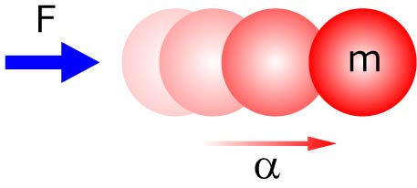
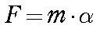
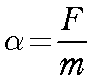

質量，ｍ，を持つ物体を考えます．
何の力も加えなければ，その物体は静止しています．
ここにある力，Ｆ，を加えると一定の加速度，α，を生じます．
これが，ニュートンの第１，第２，法則です．

数式で記述すると，

となります．
ここで，それぞれの次元をきちんと理解しておきましょう．
運動方程式を理解する上で，次元をきちんと把握しておくと非常に理解が進みます．
力，Ｆ，の次元は，Ｎ（ニュートン），もしくは，kg・m/s2
質量，ｍ，の次元は，kg
加速度，α，の次元は，m/s2
となります．
きちんと両辺の次元が一致していることがわかりますね．
加速度の次元は，m/s2，ですね，つまり，(m/s)/s．
これは単位時間あたりの速度変化という意味です．
先ほどの式を変形すると，

つまり，質量，ｍ，の物体に一定の力，F，を常時加えると，一定の加速度，α，が物体に働く，と言う意味となります．
ずーっと加速している，ということはどんどん速度が上がっていくことになります．
これは，一定の力を重力，と考えるとわかりやすいです．
ものを高いところから落とすと，どんどん速度が増していく，というのがこの式で表すことができます．
さて，これとよく似た用語として，運動量，力積があります．
これについては，ここを参照してください．